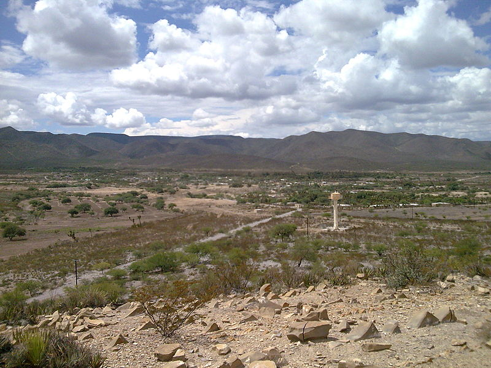
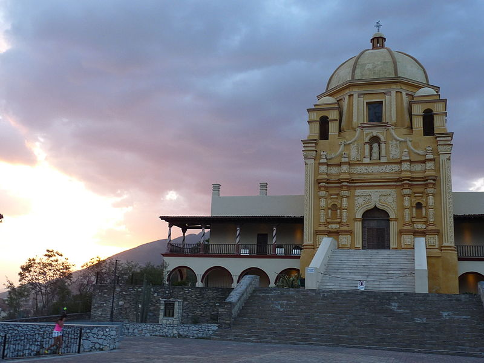
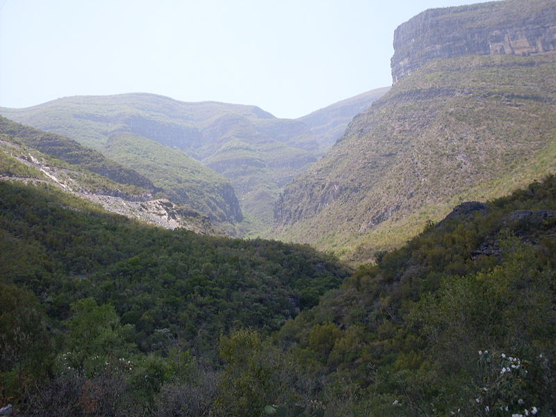
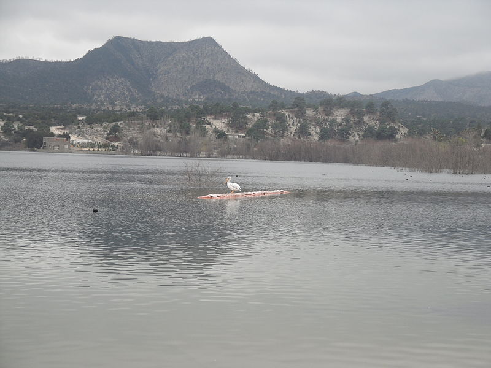

Nuevo León ( escuchar) es uno de los treinta y un estados que, junto con la Ciudad de México, forman los Estados Unidos Mexicanos. Su capital y ciudad más poblada es Monterrey. Está ubicado en la región noreste del país, limitando al norte con el río Bravo que lo separa de Estados Unidos, al este con Tamaulipas, al sur con San Luis Potosí y al oeste con Coahuila. Con 5 119 504 habs. en 2015 es el séptimo estado más poblado, por detrás del Estado de México, Veracruz, Jalisco, Puebla, Guanajuato y Chiapas.6 Fue fundado el 5 de julio de 1824.
escuchar) es uno de los treinta y un estados que, junto con la Ciudad de México, forman los Estados Unidos Mexicanos. Su capital y ciudad más poblada es Monterrey. Está ubicado en la región noreste del país, limitando al norte con el río Bravo que lo separa de Estados Unidos, al este con Tamaulipas, al sur con San Luis Potosí y al oeste con Coahuila. Con 5 119 504 habs. en 2015 es el séptimo estado más poblado, por detrás del Estado de México, Veracruz, Jalisco, Puebla, Guanajuato y Chiapas.6 Fue fundado el 5 de julio de 1824.
Se divide en 51 municipios. Su capital es Monterrey. Los municipios de Apodaca, Pesqueria, Cadereyta Jiménez, García, General Escobedo, Guadalupe, Juárez, Salinas Victoria, San Nicolás de los Garza, San Pedro Garza García, Santa Catarina y Santiago (Nuevo León), junto con Monterrey, forman la Zona Metropolitana de Monterrey; la tercera más importante del país. Otras localidades importantes son Allende, Agualeguas, Linares, Montemorelos, China, Mier y Noriega, Hualahuises, Sabinas Hidalgo, Doctor Arroyo, Mina, Cadereyta Jiménez, Lampazos de Naranjo y la ciudad fronteriza de Anáhuac.
